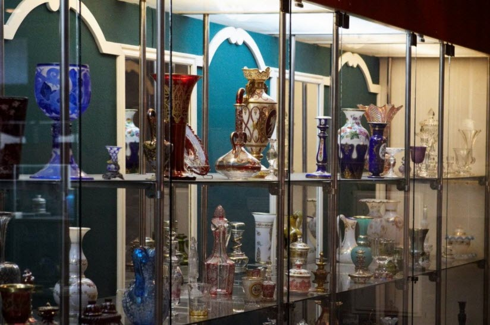

Музей стекла и хрусталя

Безусловно, один из самых колоритных и интересных музеев Пензенской области находится именно в Никольске. Его многочисленные экспозиции посвящены стеклу и хрусталю. Общее количество выставленных экспонатов достопримечательности превышает 14 тыс. единиц, а изюминкой места является то, что это одно из крупнейших собраний художественного стекла не только на территории области, но и во всей России.